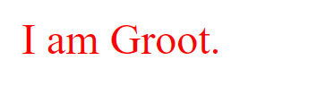

CSS
DEFINITION
Selectors are used as a condition in a CSS rule to determine which elements in the document tree are matched by the selector an are thus targeted by the formatting. The subjects of the selectors are elements. Selectors can start with a universal(* or empty space) or a simple selector.
SELECTORS SYNTAX
Defines a set of one or more sequence of simple selectors separated by combinators with one pseudo element possibly appended to the last sequence.
i.e. dir(type)#abc(id)>(combinator)(child)p(type).xyz(class)[title]+(combinator)span(adjacent).last-of-type(pseudo element):after(pseudoelement)
SEQUENCE
- A chain of simple selectors separated by combinators.
- This always starts with a type selector or a universal selector.
- This cannot contain other type selectors or universal selectors.
TYPE SELECTORS
Selectors that match elements by node name.
i.e. p (element) { }
UNIVERSAL SELECTORS
An asterisk that matches a single element of any type. In CSS3: Asterisks can be used as namespaces combination.
i.e. * { }
ATTRIBUTE SELECTORS
These attributes targets an element based on a particular attribute. It specifies attribute in brackets.
i.e. [class] { color: blue; }
SYNTAX
- [attr] - attr attribute element representation
- [attr=value] - selects specified attributes and values kind of elements
- [attr~=value] - defines a set from the set of values and separated by a space.
- [attr|=value] - targets the lang attribute
- [attr^=value] - beginning of the specified value
- [attr$=value] - ending of the specified value
- [attr*=value] - containing a specified value
CLASS SELECTOR
A class selector contains a period and a class name. It also takes the possibility that there are multiple classes affected by it.
Classes can be chained with the use of a class selector. As well as a chain can start with a universal or a type selector but cannot be more than one.
i.e. .x { }
ID SELECTOR
The pound sign followed by an ID body. It can also be used as an attribute selector.
i.e. #bgio { }
PSEUDO CLASS SELECTORS
An implicit class associated with a target.
Types of pseudo class selectors:
Link pseudo classes
- :link - for links that are not visited.
- :visited - for links that are visited.
User action pseudo classes
- :hover - hovering over something, usually called a rollover effect.
- :active - activate a particular element
- :focus - focus is moved to a particular element. i.e. form elements
Target pseudo classes
- :target - used if the element targeted is using an ID.
Language pseudo classes
- :lang - targets language classes.
UI elements status pseudo classes
- :enabled - represents enabled elements
- :disabled - represents disabled elements
- :checked - represents checked elements
- :indeterminate- represents elements that are indeterminates such as <progress> elements, <input type = ""> and etc.
Structural pseudo classes
- :root - root element
- :first-child - represents the first child of an element.
- :last-child - represents the last child of an element.
- :only-child - represents the only child of an element
- :nth-child(an+b) - has an an+b-1 siblings before it in the DOM tree.
- :nth-last-child - counted from the last child; backwards counting on the same basis as nth-child
- :first-of-type - first sibling of its type
- :last-of-type - last sibling of its type
- :only-of-type - no siblings from the given type
- :nth-of-last-type
- :empty - no children at all.
The children pseudo classes basis is the DOM tree, which is a structure built by the HTML tag structure. The tree is built in every browser which allows it to understand your HTML tag structure even if it isn't tagged properly.
Negation pseudo classes
- :not - used for simple selectors only. It can be placed in any of the other elements and would negate a content. If what it should modify is not specified, it will be read as a general selector and would affect the whole HTML document.
A combinator is something that explains the relationship between the selectors. A CSS selector can contain more than one simple selector. Between the simple selectors, we can include a combinator. There are four different combinators in CSS3:
Adjacent sibling selectors
The '+' combinator selects nodes that immediately follow the former specified element. Syntax: A + B Example: div + p will match any <p> that immediately follows a <div>.
General sibling selectors
The '~' combinator selects nodes that follow (not necessarily immediately) the former specified element, if both elements shared the same parent. Syntax: A ~ B Example: p ~ span will match all <span> elements that follow a <p> element inside the same element.
Child selectors
The '>' combinator selects nodes that are direct children of the former specified element. Syntax: A > B Example: ul > li will match all <li> elements that are inside a <ul> element.
Descendant selectors
he ' ' combinator selects nodes that are children (not necessary direct children) of the former specified element. Syntax: A B Example: div span will match any <span> element that is inside a <div> element.
PSEUDO-ELEMENTS are used to address sub-parts of elements. They allow you to set style on a part of an element's content beyond what is specified in the documents. In other words they allow logical elements to be defined which are not actually in the document element tree. Logical elements allow implied semantic structure to be addressed in CSS selectors.
Pseudo-elements may only be applied to external and document-level contexts - not to in-line styles. Pseudo-elements are restricted in where they can appear in a rule. They may only appear at the end of a selector chain (after the subject of the selector). They should come after any class or ID names found in the selector. Only one pseudo-element can be specified per selector. To address multiple pseudo-elements on a single element structure, multiple style selector/declaration statements must be made.
::after
::after pseudo-element matches a virtual last child of the selected element. It is typically used to add cosmetic content to an element by using the content CSS property. This element is inline by default.
::before
::before creates a pseudo-element that is the first child of the element matched. It is often used to add cosmetic content to an element by using the content property. This element is inline by default.
::first-letter
The ::first-letter CSS pseudo-element selects the first letter of the first line of a block, if it is not preceded by any other content (such as images or inline tables) on its line.
::first-line
The ::first-line CSS pseudo-element applies styles only to the first line of an element. The amount of the text on the first line depends of numerous factors, like the width of the element, width of the document, and the font size of the text. As all pseudo-elements, ::first-line does not match any real HTML element.
A first line has only meaning in a block-container box, therefore the ::first-line pseudo-element has only an effect on elements with a display value of block, inline-block, table-cell or table-caption. In all other cases, ::first-line has no effect.
DEFINITION
CSS rule precedence refers to the CSS declarations that are displayed in the browser with considerations on three levels: by rule and importance, by specifity and by order.
LEVEL 1: By origin and importance
HIERARCHY
Important Declarations: these declarations are usually prioritized first because of the tagline !important. Although, the tagline important should be used sparingly and used only when it's needed. This is due to the fact that adding an important declaration will disrupt the natural flow of your declarations. After all, an important declaration gives weight to elements, which should only be used for those that need it. Using it too much will abuse its usefulness and make it harder for you to maintain your code.
The !important annotation is to create a balance the power between author and the user style sheets. In order to balance it, the declaration to be made can be important which means it can increase its weight in the cascade and it is inverted to the order of precedence. Its declaration is important if there is an !important annotation in it.
- user agent important declarations
- user important declarations
- author important declarations
declarations from a user agent stylesheet that contains an !important tagline. These declarations when declared important takes precedence because these are the stylesheets used by browser to render html files.
i.e. li { margin-left: 10px !important }
user declarations that contains !important tagline. User important declarations can override author important declarations.
author declarations that contains the !important tagline. These declarations takes the lowest importance from user important and user agent important but takes precedence before normal declarations.
i.e. (To further show the difference between user important declarations and author important declarations)
Here is the declarations made in css:
This is the result after opening the html file:
As you can see, even with both declarations containing an !important tagline, the user important declarations is still given precedence.
Normal Declarations: declarations that doesn't contain an !important tagline.
- author normal declarations
- user normal declarations
- user agent normal declarations
author specified declarations that are written to create a style for the document. These declarations take precedence for it can override the other following declarations below.
declarations specified by the user (i.e. A person wanted to make the font style bigger than the normal size. To do that, he can then edit such in the browser options or through some third party software or extension installed in the browser such as ChromeVox for example.) They can overwrite user agent normal declarations if an author normal declaration is not set.
declarations that served as a default style formatting for web pages.
i.e. <li>I</li> - This item will be styled as a list item once the html file is viewed in a browser.
LEVEL 2: BY SPECIFICITY
DEFINITION
Specificity is a mechanism in which it is with the CSS cascade that resolves the conflict resolutions. It states that when there are two or more declarations to the same element that applies to the CSS files and it is set with the same properties, the declaration of the element with the most specific selector will be acknowledged or would take the precedence.
Specificity determines, which CSS rule is going to apply in the browsers. Every selector has its place in the specificity hierarchy. When the selectors have an equal number of specificity, the latest one that is declared is the one that counts. The ones with more specific selectors have the highest specificity. The embedded style sheet has a greater specificity than the other. Always try to use an id to increase the specificity value. The universal selector and the inherited selectors are the one whose specificity is 0. CSS Specificity Calculator is used to calculate specificity.
Here are some descriptions of the process by which the Specificity rule precedence of the selectors of two or more declarations is compared to one other.
- The declaration from a style attribute has a highest specificity than the ones in a rule with a selector (an inline style). If there is no declaration are inline, then proceed to the second description.
- In the second description count the ID selectors. The declaration that has the highest number has the highest specificity. If there are the same number of declarations of the ID selectors or rather they had zero ID selectors, then proceed to the third description.
- After counting the ID selector, in the third description count the class selector, attribute selector and the pseudo-classes. The one that has the highest number of declaration has the highest specificity. If there are two or more that has the same total of number of declarations , or they have the total of zero, proceed to the fourth description.
- In the fourth description count the element type selectors and the pseudo-elements. The declaration with the highest number has the highest specificity.
If there are two or more selectors have the same specificity, the latter specified takes the highest specificity. This is according to the rules of the CSS cascade.
The more specific the greater precedence. In calculating the specificity, there are specificity values assigned to the elements. For the HTML selector has a specificity of 1. The Class selector has a specificity of 10. The ID selector has a specificity of 100.
Examples:
- div has a specificity of 1 (1 HTML selector)
- div p has a specificity of 2 (2 HTML selector)
- .name has a specificity of 10 (1 class selector)
- div p.name has a specificity of 12 (2 HTML selector + 1 class selector)
- #lastname has a specificity of 100 ( 1 ID Selector)
- body # lastname .name p has a specificity of 112 ( HTML selector + Id selector + Class selector + HTML selector)
The CSS Specificity is said to be the one of the most difficult concepts in Cascading Style Sheet. There are different weight of the selectors is really the reason why the css-rules don’t apply to some elements in the document. In order to minimize the time in finding the bugs of the CSS code, understand how the browsers interpret the codes. And in understanding it, having a firm understanding on how the specificity rule precedence works.
LEVEL 3: BY ORDER
This are the rules in that stated determines the one that take precedence in some cases like the conflicts and repetitions. This can cascade in the order of the precedence. The more specific the rule is, the higher its precedence. The rule that are on tag has the least specific.
The rules of precedence are located in a factor. The locations are Browser Default Rules, Embedded Styles, and Inline style Rules.
For example:

LOCATION OF RULES
The Cascading Style Sheet Rules are located in many places in which it includes the browser default style sheet, external style sheet, embedded styles and the inline style rules. The one which is closer to the rule is the one that is being styled, the higher its precedence. It starts to the furthest and goes to the closest to the content.
BROWSER STYLESHEET
There is built-in default style sheet in all the browsers. In default style sheet starts the cascading. If there are no styles defined in the file, the browser styles will be used. Defaults are slightly different inn each browser.
EXTERNAL STYLESHEET
This style sheet the browser default style sheet is overridden by the rules in the external style sheet. If there several many external style sheet, the one which is being applied is the one being listed.
For example: <link rel="stylesheet" type="text/css" href="webtek.css">
EMBEDDED STYLESHEETS
In this style sheet, the styles that are embedded in the header of the page are the next in the order of precedence. If there are several rules, naturally those rules are being placed in the external style sheet.
For example:
INLINE STYLES
Lastly the inline styles. Inline styles are one that are closest in the contents of the file, they take the highest precedence because of this.
For example: <h1 style="color:blue;margin-left:30px;">This is a heading</h1>
REFERENCES
CSS Selectors(n.d.). Retrieved from https://www.w3schools.com/css/css_attribute_selectors.asp
Doyle, E. et.al.(n.d.). Attribute Selectors. Retrieved from https://developer.mozilla.org/en/docs/Web/CSS/Attribute_selectors
Doyle, E. et.al.(n.d.).Type Selector(n.d.). Retrieved from https://developer.mozilla.org/en-US/docs/Web/CSS/Type_selectors
Doyle, E. et.al.(n.d.). :indeterminate. Retrieved from https://developer.mozilla.org/en-US/docs/Web/CSS/Universal_selectors
Doyle, E. et.al.(n.d.). :last-child. Retrieved from https://developer.mozilla.org/en-US/docs/Web/CSS/:last-child
Doyle, E. et.al.(n.d.). :nth-child. Retrieved from https://developer.mozilla.org/en-US/docs/Web/CSS/:nth-child
Doyle, E. et.al.(n.d.). :first-of-type. Retrieved from https://developer.mozilla.org/en-US/docs/Web/CSS/:first-of-type
Doyle, E. et.al.(n.d.). :only-of-type. Retrieved from https://developer.mozilla.org/en-US/docs/Web/CSS/:only-of-type
Doyle, E. et.al.(n.d.). :empty. Retrieved from https://developer.mozilla.org/en-US/docs/Web/CSS/:empty
CSS Versions. (2015). Retrieved from: http://www.corelangs.com/css/basics/versions.html
Shamberger, H. (2013) CSS versions. Retrieved from: http://cccvc.com/faculty/hshamberger/vc147/week01/css_vs.html
Olsson, T., & O'Brien, P. (n.d). CSS Versions. http://reference.sitepoint.com/css/csshistory
Ian Hickson. (2016, November 23). Retrieved from: https://en.wikipedia.org/wiki/Ian_Hickson
CSS3 Introduction. (n.d.). Retrieved from: https://www.w3schools.com/css/css3_intro.asp
Kirkwood, A. (2005, June 3). Definition: Cascading style sheets (CSS), stylesheet, styles, specifications. Retrieved March 5, 2017, from http://www.motive.co.nz/glossary/stylesheets.php
Posted, & Rouse, M. (2015, October 9). What is cascading style sheet (CSS)? - definition from WhatIs.Com. Retrieved March 5, 2017, from http://searchmicroservices.techtarget.com/definition/cascading-style-sheet-CSS
Cascading Style Sheets. (n.d.). Retrieved from http://www.edb.utexas.edu/minliu/multimedia/PDFfolder/CSSGottlieb.pdf
Cascading Style Sheets (CSS). (n.d.). Retrieved from http://www.inf.ufsc.br/~bosco.sobral/downloads/Livro-Java-Como-Programar-Deitel-Ed6/additional/addnlRefs/CSS/CSS.pdf
Introduction to Cascading Style Sheets. (n.d.). Retrieved from https://www.austincc.edu/hr/profdev/eworkshops/docs/CSS_intro.pdf
What is CSS (Cascading Style Sheet)? (n.d.). Retrieved March 26, 2017, from http://www.computerhope.com/jargon/c/css.htm
History of HTML and CSS. (n.d.). Retrieved March 26, 2017, from http://amyhissom.com/HTML5-CSS3/history.html
Rule Sets. (n.d.). Retrieved from http://reference.sitepoint.com/css/rulesets
Chen, H.J., et.al. (2016, December 17). Combinators. Retrieved from https://tympanus.net/codrops/css_reference/combinators/
Mills, C.D. (2017, February 5). CSS Combinators and multiple selectors. Retrieved from https://developer.mozilla.org/en-US/docs/Learn/CSS/Introduction_to_CSS/Combinators_and_multiple_selectors
Carlson, L. (1998-2017). Difference between a pseudo-class and a pseudo-element. Retrieved from http://www.d.umn.edu/~lcarlson/csswork/selectors/pseudo_dif.html
Zea, R. (2016, May 3). An Ultimate Guide to CSS Pseudo-Classes and Pseudo-Elements. Retrieved from https://www.smashingmagazine.com/2016/05/an-ultimate-guide-to-css-pseudo-classes-and-pseudo-elements/
Gardner, J. (2016, October 20). At-rule. Retrieved from: https://developer.mozilla.org/en-US/docs/Web/CSS/At-rule
Graham, G. (2015, May 12). The At-Rules of CSS. Retrieved from: https://css-tricks.com/the-at-rules-of-css/
Olsson, T. & O'Brien. P. (n.d.). At-rules. Retrieved from: http://reference.sitepoint.com/css/atrules
Olsson, T. & O'Brien. P. (n.d.). Rule Sets. Retrieved from: http://reference.sitepoint.com/css/rulesets
HTML Stylesheets (2017 March 15) Retrieved From https://www.w3.org/TR/WD-html40-970917/present/styles.html
XHTML Style Sheet Module (2017 March 15) Retrieved from https://www.w3.org/TR/xhtml2/mod-styleSheet.html
Bos, B. et.al. (2011, June 7). Cascading Style Sheets Level 2 Revision 1 (CSS 2.1) Specification. Retrieved from https://www.w3.org/TR/2011/REC-CSS2-20110607/#minitoc
Lazaris, L. (2010, November 2). !important CSS Declarations: How and When to use them. Retrieved from https://www.smashingmagazine.com/2010/11/the-important-css-declaration-how-and-when-to-use-it/
Zartner, S. et.al. (2015, July 7). Cascade. Retrieved from https://developer.mozilla.org/en-US/docs/Web/CSS/Cascade
Meiert, J. (2007, September 22). User Agent Stylesheets: Basics and Samples. Retrieved from https://meiert.com/en/blog/20070922/user-agent-style-sheets/
Specificity (2017). Retrieved from http://htmldog.com/guides/css/intermediate/specificity/
Roberts, A. (2014 August 21). Specificity. Retrieved from https://www.sitepoint.com/web-foundations/specificity/
Friedman, V.(2007 July 27). CSS Specificity: Things You Should Know. Retrieved from https://www.smashingmagazine.com/2007/07/css-specificity-things-you-should-know/
Kurtus, R. (n.d.). Order of Precedence for CSS Rules - Web Design lessons. Retrieved from http://www.school-for-champions.com/web/css_cascade_order.htm
Jenkov, J. (n.d.). CSS Precedence. Retrieved from http://tutorials.jenkov.com/css/precedence.html
Bradley, S. (n.d.). Understanding Style Precedence in CSS: Specificity, Inheritance, and the Cascade . Retrieved from http://vanseodesign.com/css/css-specificity-inheritance-cascaade/